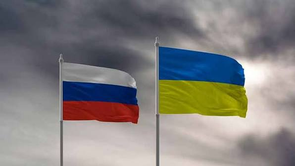

Rusia y Ucrania: Los paises con peores indicadores de paz global
La invasión militar a gran escala iniciada por Rusia ha transformado a ambos países en las naciones con los peores indicadores de paz global debido al volumen de muertes militares y armamento pesado utilizado.
La situación actual:
El conflicto se mantiene como una guerra de desgaste convencional masiva. Rusia continúa movilizando cientos de miles de tropas y sosteniendo ofensivas aéreas continuas, mientras que el territorio ucraniano sufre bombardeos constantes que destruyen su red eléctrica y ciudades completas.
Por qué son de los más peligrosos:

Datos sobre conflicto en Ucrania
| Indicador | Dato / Valor |
|---|---|
| Tasa / Total de Mortalidad Civil | +10,000 civiles confirmados |
| Índice de Paz Global (GPI) | 157 (Nivel de paz extremadamente bajo) |
| Refugiados y Desplazados | +6 millones de refugiados en Europa |
| Infraestructura Dañada | Red eléctrica y civil gravemente afectada |
Datos sobre conflicto en Rusia
| Indicador | Dato / Valor |
|---|---|
| Bajas Militares Estimadas | +300,000 (Entre muertos y heridos) |
| Índice de Paz Global (GPI) | 158 (Estado en conflicto / Sancionado) |
| Migración / Éxodo Poblacional | Aproximadamente 800,000 emigrantes |
| Impacto Socioeconómico | Sanciones masivas y aislamiento económico |
Noticias
Himnos
Himno Nacional de Ucrania:
Himno Nacional de Rusia: